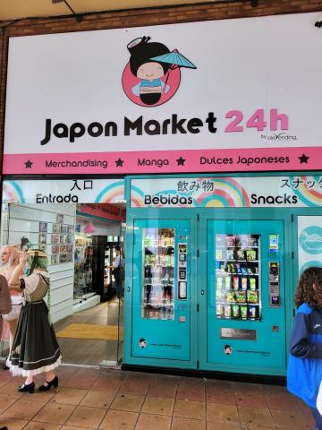
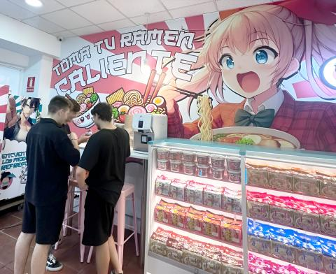
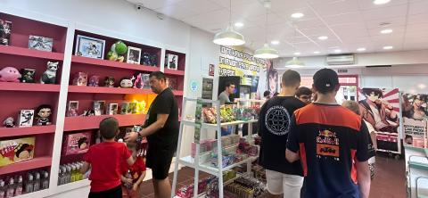
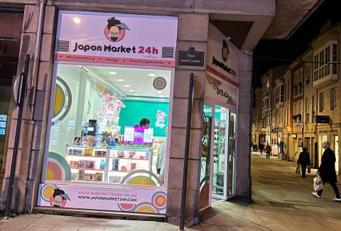
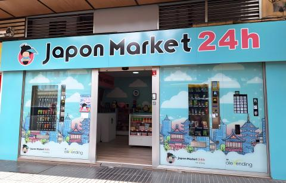
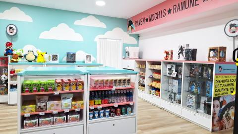
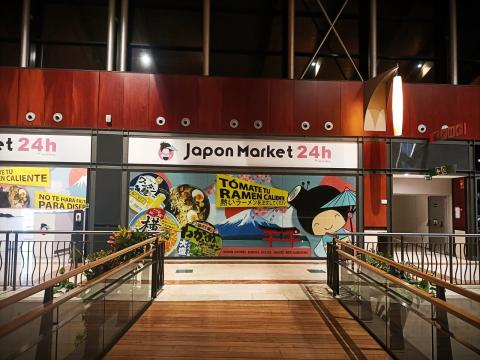

Japon Market 24h
A multi-year, multidisciplinary role for a Japanese pop culture retail brand: store interiors, technical drawings, visual identity, packaging and social content for locations opened across Spain between 2020 and 2024.
The challenge
The brand was opening in new cities every few months, each time inside a different building with its own shape, light and foot traffic. Every store had to feel unmistakably like Japon Market while responding to a site nobody had chosen with the brand in mind.
A storefront built to be seen from down the corridor
Set under an arched passage inside a shopping centre, this store had to read clearly from a distance before shoppers were close enough to see any detail, so the signage and colour blocking were designed to work as a beacon first and a shopfront second.



A street corner with a queue on opening day
A ground-floor unit on a busy pedestrian street, finished with a hand-painted anime mural behind the hot-food counter that became the store's most photographed corner from its first weekend open.



Two storefronts, one identity, day and night
A historic street front with narrow proportions, paired with a neon sign inside the window that has become the store's signature detail after dark, when most of its passing traffic happens.



The work
I worked across store interiors, architectural drawings, 3D visualisation, packaging, editorial materials, social media and digital communication, adapting one consistent identity to buildings that ranged from mall corners to full street units.
A larger format, with its own delivery fleet
The biggest store in the network, big enough for a full sky-mural interior and its own branded delivery van, both designed as part of the same visual system as the smaller pop-up format.



A shopping-centre unit for opening day
A mall unit dressed for launch, sakura branding and balloon arches over the same fixture kit used everywhere else in the network, proof that the system scaled without losing its identity.


A shopping-centre walkway takeover
Rather than a single storefront, this location used illuminated wall panels along an indoor walkway, turning ordinary circulation space into the brand's own corridor.



What the project taught me
A retail brand becomes more convincing when the physical space, the objects on the shelf and the communication around them feel like different expressions of the same idea, even when every one of its seven stores sits inside a completely different building.